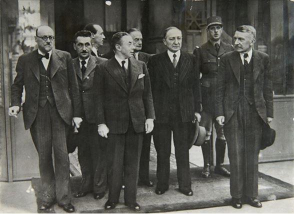
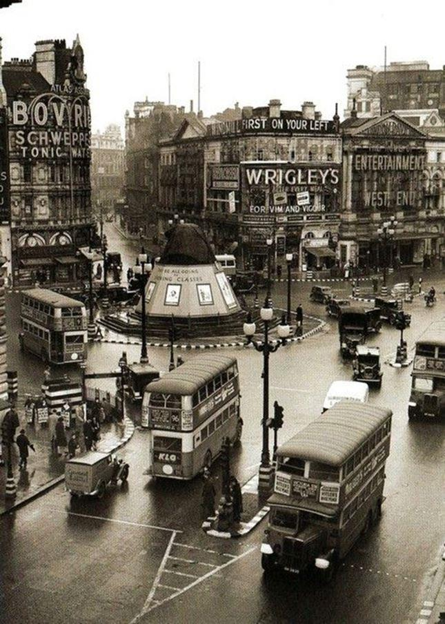
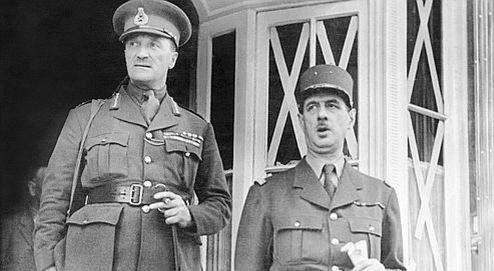
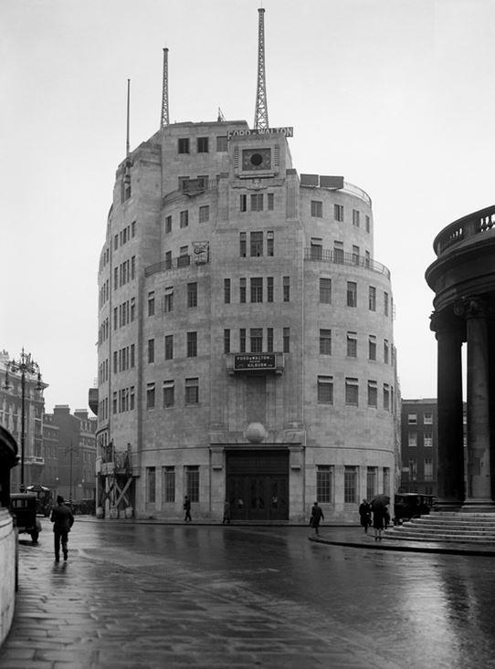
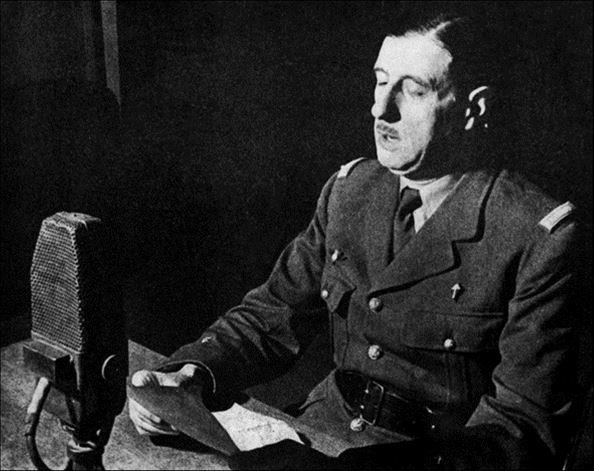
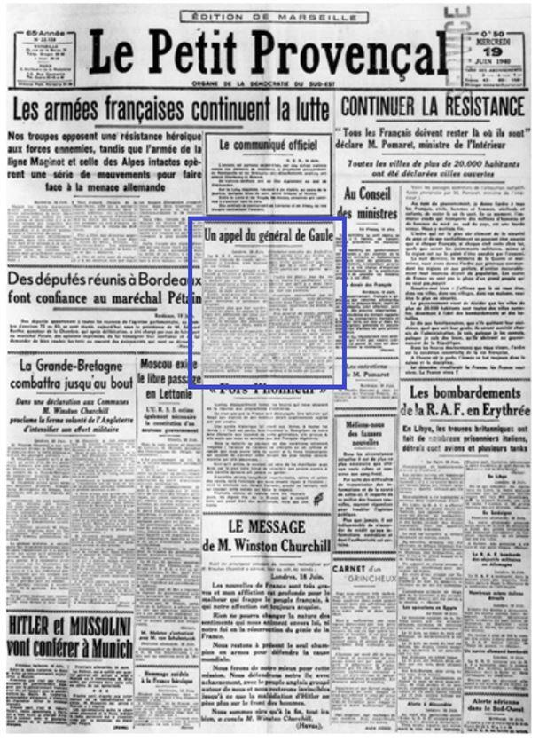
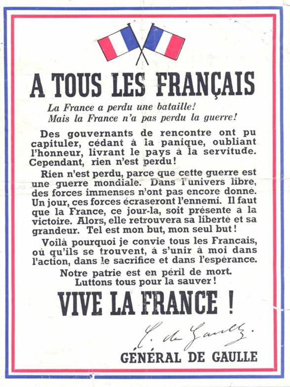
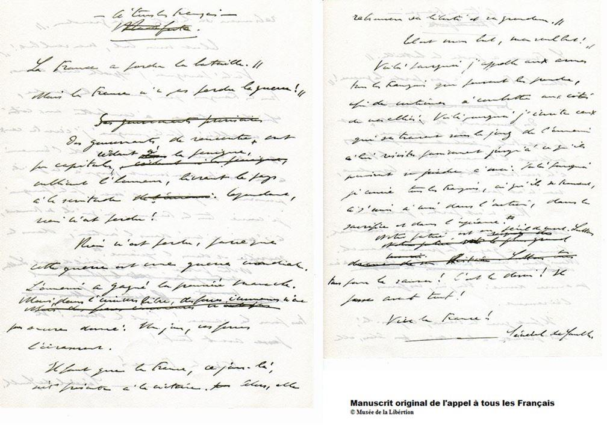
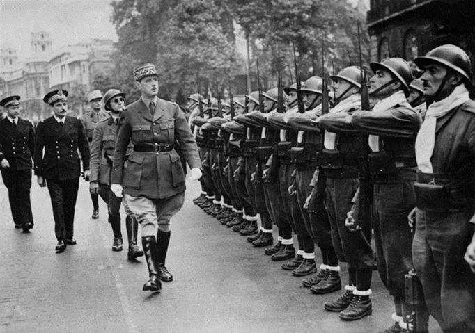
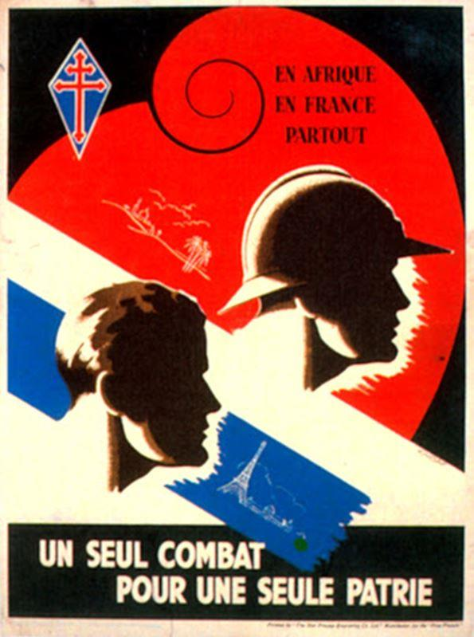

« Il ne restera, de ceux qui ne combattent pas pour un rêve, que la trace des esclaves ou la vaine poussière des armées vaincues... »
André Malraux
En ce mois de juin 2020 nous commémorerons le quatre-vingtième anniversaire de l’appel du 18 juin prononcé par le général de Gaulle. Si elle est aussi anniversaire d’une défaite (la bataille de Waterloo) cette date du 18 juin, anniversaire d’un acte fondateur, marque incontestablement l’histoire de la Nation française. Elle constitue même sa propre histoire, suffisamment efficiente pour ne pas avoir besoin de rappeler le millésime, ne parle-t-on pas de l’« Appel du 18 Juin », de l’« Homme du 18 Juin » sans autre précision ?
En guerre contre l’Allemagne nazie depuis septembre 1939, l’armée française, dès le mois de mai 1940, ne parvient plus à faire face à l’offensive éclair des chars ennemis. La situation en France est critique. Des millions de civils fuient face à la débâcle militaire et l’avancée des troupes allemandes.
A 49 ans, Charles de Gaulle, tout juste nommé général de brigade à titre temporaire, entre le 5 juin dans le gouvernement présidé par Paul Reynaud, au poste de sous-secrétaire d’État à la Défense nationale et à la Guerre. Dès le 6 juin, De Gaulle explique à Paul Reynaud qu'il faut admettre que la bataille est perdue sur le sol français, mais que l'on doit continuer la guerre dans l'Empire1.

Gouvernement de Paul Reynaud
Lorsque le 9 juin 1940, le général de Gaulle atterrit dans la capitale britannique, c'est la première fois qu'il met le pied sur le sol de l'Angleterre et la première fois qu'il rencontre Winston Churchill. Sur place, la première impression est celle du contraste entre un pays en déroute et le calme olympien de Londres. « C'était dimanche, écrit-il dans ses Mémoires, la capitale anglaise offrait l'aspect de la tranquillité, presque de l'indifférence. Les rues et les parcs remplis de promeneurs paisibles, les longues files à l'entrée des cinémas, les autos nombreuses, les dignes portiers au seuil des clubs et des hôtels, appartenaient à un autre monde que celui qui était en guerre 2»
 Roland de MargerieChargé par le président du Conseil français de demander au gouvernement anglais un envoi massif en France de nouveaux moyens aériens et terrestres, il est accompagné de Roland de Margerie, chef du cabinet diplomatique de Reynaud, qui appartient comme lui au camp des « jusqu'au-boutistes », et de son aide-de-camp, le lieutenant Geoffroy de Courcel, un diplomate qu'il avait recruté afin de disposer d'un collaborateur de confiance « parlant l'anglais ».
Cependant, rien n'eût été possible, si dans la semaine du 10 au 17 juin précédant l'appel, un nouvel axe franco-britannique ne s'était substitué à l'axe Churchill-Reynaud3. Ce nouvel axe, qui allait durer, avec bien des vicissitudes et bien des tempêtes, pendant cinq années, c'était l'axe Churchill-de Gaulle, alors en train d'émerger au milieu de la débâcle et du désarroi.
Si Londres constitue sans doute la meilleure plate-forme pour organiser une phalange de volontaires français décidés à poursuivre le combat sous leur propre drapeau, l'analyse stratégique du Général, telle qu'elle sera exposée dans l'appel, rejoint celle de Churchill dans son discours du même jour aux Communes sur « la plus belle heure » : à savoir la vision d'une guerre planétaire et non d'une guerre purement européenne4. Car aux yeux de De Gaulle comme à ceux de Churchill, la guerre en cours est une guerre mondiale. Si la première bataille a été perdue, d'autres peuvent être gagnées, et à l'horizon luira le soleil de la victoire.
« La première chose à faire était de hisser les couleurs. La radio s’offrait pour cela. Dès l’après-midi du 17 juin, j’exposai mes intentions à M. Winston Churchill. Naufragé de la désolation sur les rivages de l’Angleterre, qu’aurais-je pu faire sans son concours ? Il me le donna tout de suite et mit, pour commencer, la BBC à ma disposition.
Nous convînmes que je l’utiliserais lorsque le gouvernement Pétain aurait demandé l’armistice. Or, dans la soirée même, on apprit qu’il l’avait fait5. »
Mais si Churchill autorise l’accès au micro de la BBC, le War Cabinet soulève une objection : le général de Gaulle est persona non grata du gouvernement français. Or les Anglais estiment qu’il reste encore une possibilité que ce gouvernement agisse contre l’Allemagne.
Tandis que Churchill passe sa journée à préparer un discours qu’il doit prononcer devant les élus de la Chambre des communes, Edward Spears, ancien chef du MI6 en France qui deviendra le représentant du gouvernement britannique aux côtés de Charles de Gaulle, obtient l’accord du cabinet.

Le général Charles de Gaulle avec le brigadier Edward Spears, à Londres,
le 17 juin 1940
L’allocution du général de Gaulle n’est donc autorisée que tardivement et avec un texte modifié dans son entrée en matière.
À 18 heures, le 18 juin, le général de Gaulle entre dans le bâtiment de la BBC qui surplombe Oxford Circus. Sont présents dans le studio d’enregistrement Jean Marin, correspondant de l’agence Havas à Londres, future voix de la France Libre, de l’émission « Les Français parlent aux Français », et un collaborateur de la BBC, Gibson Parker. Ils installent le général devant un microphone, lui propose un essai de voix. De Gaulle dit alors « la France », le technicien répond : « parfait, nous sommes prêts ».
De Gaulle débute alors cet appel qui va, comme son orateur, entrer l’histoire :
« Les chefs qui, depuis de nombreuses années, sont à la tête des armées françaises, ont formé un gouvernement. Ce gouvernement, alléguant la défaite de nos armées, s'est mis en rapport avec l'ennemi pour cesser le combat.
Certes, nous avons été, nous sommes submergés par la force mécanique, terrestre et aérienne de l'ennemi.
Infiniment plus que leur nombre, ce sont les chars, les avions, la tactique des Allemands qui nous font reculer. Ce sont les chars, les avions, la tactique des Allemands qui ont surpris nos chefs au point de les amener là où ils en sont aujourd’hui.
Mais le dernier mot est-il dit ? L'espérance doit-elle disparaître ? La défaite est-elle définitive ? Non ! Croyez-moi, moi qui vous parle en connaissance de cause et vous dis que rien n’est perdu pour la France. Les mêmes moyens qui nous ont vaincus peuvent faire venir un jour la victoire.
Car la France n'est pas seule ! Elle n'est pas seule ! Elle n'est pas seule ! Elle a un vaste Empire derrière elle. Elle peut faire bloc avec l'Empire britannique qui tient la mer et continue la lutte. Elle peut, comme l'Angleterre, utiliser sans limites l'immense industrie des États-Unis.
Cette guerre n'est pas limitée au territoire de notre malheureux pays. Cette guerre n'est pas tranchée par la bataille de France. Cette guerre est une guerre mondiale. Toutes les fautes, tous les retards, toutes les souffrances n'empêchent pas qu'il y a, dans l'univers, tous les moyens pour écraser un jour nos ennemis. Foudroyés aujourd'hui par la force mécanique, nous pourrons vaincre dans l'avenir par une force mécanique supérieure. Le destin du monde est là.
Moi, général de Gaulle, actuellement à Londres, j'invite les officiers et les soldats français qui se trouvent en territoire britannique ou qui viendraient à s'y trouver, avec leurs armes ou sans leurs armes, j'invite les ingénieurs et les ouvriers spécialisés des industries d'armement qui se trouvent en territoire britannique ou qui viendraient à s'y trouver, à se mettre en rapport avec moi.
Quoi qu'il arrive, la Flamme de la résistance française ne doit pas s'éteindre et ne s'éteindra pas.
Demain, comme aujourd'hui, je parlerai à la radio de Londres.»
« À mesure que s’envolaient les mots irrévocables, je sentais en moi-même se terminer une vie, celle que j’avais menée dans le cadre d’une France solide et d’une indivisible armée. À quarante-neuf ans, j’entrais dans l’aventure, comme un homme que le destin jetait hors de toutes les séries.5 »
L’enregistrement du discours n’ayant pas été conservé par la BBC6, il ne reste aujourd’hui que peu de traces de l’appel du 18 juin, hormis le manuscrit dont certains passages diffèrent de la version prononcée par le général de Gaulle et retranscrite dans la presse locale française.
Mais alors qui a entendu l’appel ? Si plusieurs hommes politiques comme Pierre Mendès France ou Maurice Schumann disent avoir entendu le général de Gaulle le 18 juin même, d'une manière générale, peu de Français ont entendu l'Appel du 18 Juin le jour même. En 1940, les émissions de la BBC sont encore peu écoutées en France, les nouvelles circulent par le bouche à oreille, la BBC fournit à la presse française une version du texte, reprise par les journaux comme Le petit Provençal qui publie le texte de l’appel, dès le 19 juin. « Je n’ai pas entendu l’appel du 18 juin et je ne crois pas en avoir eu connaissance avant la fin de 1941 mais dès le mois de juillet 1940 j’ai connu le défi relevé par le général de Gaulle. Je l’ai appris par les Allemands... ».
C’est en ces termes que Jean-Louis Crémieux-Brilhac s’exprime pour la revue Résistance, se faisant sans doute l’écho de nombreuses situations de 1940.
Le général de Gaulle réitère son appel à plusieurs reprises en juin 1940 et, jusqu’à la fin du mois de juillet, il s’exprime régulièrement à la radio de Londres.
Le 30 juillet, il fait réaliser une affiche qui synthétise sa position et s’adresse « A tous les Français »
Dès l’été 1940, des milliers de volontaires rejoignent l’Homme du 18 juin qui, avec le soutien des Britanniques, constitue une organisation de résistance extérieure, la France Libre.
Au sein des rangs des Forces Françaises Libres, ces premiers Français qui ont rejoint le Général de Gaulle vont, aux côtés des Alliés, poursuivre le combat contre le nazisme.

Un appel pourtant longtemps ignoré
Si le 18 juin 1940 est devenu "le 18 JUIN", ce ne fut pas du jour au lendemain. Combien de Français, même parmi les résistants précoces, même parmi les plus fervents gaullistes de France, connaissaient, quatre ans plus tard, au jour de leur libération, la date et le texte de l'Appel ? Du moins ont-ils su très tôt que de Gaulle avait été le premier à exprimer le refus et à le faire savoir, grâce au miracle de la radio -et qu'il avait été apparemment le seul, puisque la brutalité de la défaite avait tétanisé les masses et que le gouvernement du Maréchal avait contraint au silence les rares protestataires potentiels. Ainsi la prise de conscience de ce que représentait le geste du général de Gaulle a sans aucun doute existé largement et précocement parmi les Français, même chez ceux qui n'étaient pas gaullistes7.
L'appel du 18 juin 1940 aura été la source de la "la souveraineté de la gloire". Par la volonté de son auteur et du fait de l'autorité grandissante qu'il acquiert, l'Appel aura été acte fondateur, et même doublement fondateur. Acte fondateur de la Résistance, tous les mouvements de résistance et tous les actes de la résistance autochtone découlant, dans la vision gaullienne, du 18 Juin. Acte fondateur aussi d'un régime, même si celui-ci naîtra seulement vingt ans plus tard : tel a été, en effet, le talent politique du général de Gaulle, telle aura été la force du mythe créé et incarné par lui7.
L'Appel du 18 Juin marque ainsi le début de la France libre et, entre juin et juillet 1940, quelque 7.000 Français prennent le chemin de la Grande-Bretagne. Parmi eux, des centaines de futurs compagnons de la Libération, souvent âgés d’une vingtaine d’années, révoltés par le genou plié du « vainqueur de Verdun ».
Depuis, l’Appel du 18 Juin, célébré chaque année, est devenu en France le symbole du refus de la défaite et c’est à ce titre qu’il représente encore aujourd’hui un symbole fort pour tous ceux qui n’acceptent pas ce que la France est devenue par le renoncement des gouvernements successifs.
F.M.
NOTES ET RÉFÉRENCES
1. Sur les journées cruciales des 26-28 mai à Londres, cf. F. Bédarida, Churchill, Fayard, 1999, pp. 295-196 ; sur l'entretien de Gaulle-Reynaud du 6 juin, cf. C. de Gaulle, Mémoires de guerre, t. 1, L'appel, pp. 43-44.
2. C. de Gaulle, Mémoires de guerre, t. 1, L'appel, p. 46.
3. François Bédarida, « Sur la préhistoire du 18 juin », Espoir n°123, juin 2000
4. En témoigne le discours découvert et cité par Anne et Pierre Rouanet dans leur livre sur Charles de Gaulle -un discours prononcé le 21 mai à Savigny-sur-Ardres au lendemain de la bataille de Montcornet et radiodiffusé quelques jours plus tard. La parenté de l'inspiration avec le texte du 18 juin est frappante : « Nous avons déjà vaincu sur un point de la ligne [...]. Un jour nous vaincrons sur toute la ligne. » Certes, « l'ennemi a remporté sur nous un avantage initial », mais avec de meilleurs outils on peut prophétiser « nos succès de demain et notre victoire » (l'appel du 18 juin dit : « les mêmes moyens qui nous ont vaincus peuvent faire venir un jour la victoire ») Cf. Anne et Pierre Rouanet, L'inquiétude outre-mort du général de Gaulle, Grasset, 1985, pp. 101-102 et 355.
5. Charles de Gaulle – Mémoires de Guerre – Tome I : L’Appel, 1940-1942 – Plon (1954)
6. Aussi incroyable que cela paraisse, on n'a aucun enregistrement de l'appel prononcé par de Gaulle le 18 juin. Mais nous avons celui d'un autre discours, assez proche du premier, prononcé quatre jours plus tard, le 22 juin 1940, jour de l'armistice franco-allemand, où le général développe son argumentaire.
7. Jean-Louis CRÉMIEUX BRILHAC, « Du 18 Juin aux 18 juin », Espoir n°123, 2000
Partager cette page